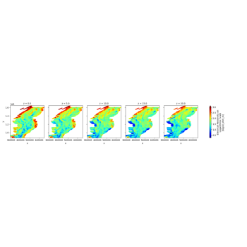
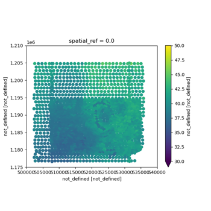
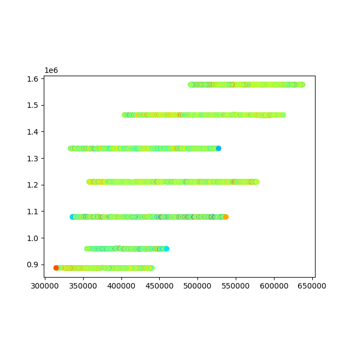
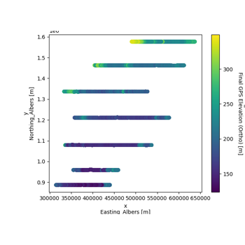

Examples
The GS Standard



Multiple TIFs to NetCDF conversion
Multiple TIFs to NetCDF conversion

CSV to NetCDF conversion

ASEG to NetCDF conversion
Plotting

Plot Tabular Examples
Multiple TIFs to NetCDF conversion